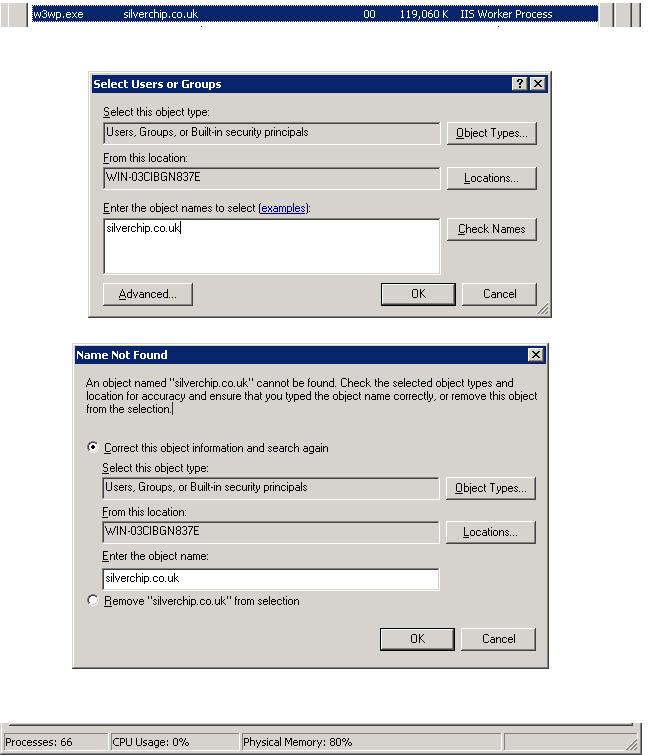
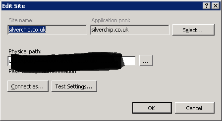
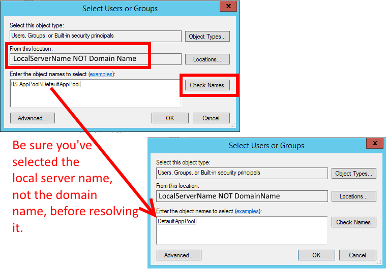

IIS7 Permissions Overview - ApplicationPoolIdentity
We have recently upgraded to IIS7 as a core web server and I need an overview in terms of the permissions. Previously, when needing to write to the file system I would have give the AppPool user (Network Service) access to the directory or file.
In IIS7 I see, as default, the AppPool user is set to
ApplicationPoolIdentity. So when I check the task-manager, I see that a user
account called WebSite.example is running the IIS Process
('Website.example' being the name of the website in IIS)
However this user account doesn't exist if I try to use that to give permissions. So, how do I determine which user to give the permissions too?
See below for the problem in screen shot. Our website (www.silverchip.co.uk) runs on the username SilverChip.co.uk. However when I add permissions, this user doesn't exist!

See AppPool Image:

Answer
ApplicationPoolIdentity is actually the best practice to use in IIS7+. It is a dynamically created, unprivileged account. To add file system security for a particular application pool see IIS.net's "Application Pool Identities". The quick version:
If the application pool is named "DefaultAppPool" (just replace this text below if it is named differently)
- Open Windows Explorer
- Select a file or directory.
- Right click the file and select "Properties"
- Select the "Security" tab
- Click the "Edit" and then "Add" button
- Click the "Locations" button and make sure you select the local machine. ( Not the Windows domain if the server belongs to one.)
- Enter " IIS AppPool\DefaultAppPool " in the "Enter the object names to select:" text box. (Don't forget to change "DefaultAppPool" here to whatever you named your application pool.)
- Click the "Check Names" button and click "OK".
Suggest
Remember to use the server's local name, not the domain name, when resolving the name
IIS AppPool\DefaultAppPool
(just a reminder because this tripped me up for a bit):